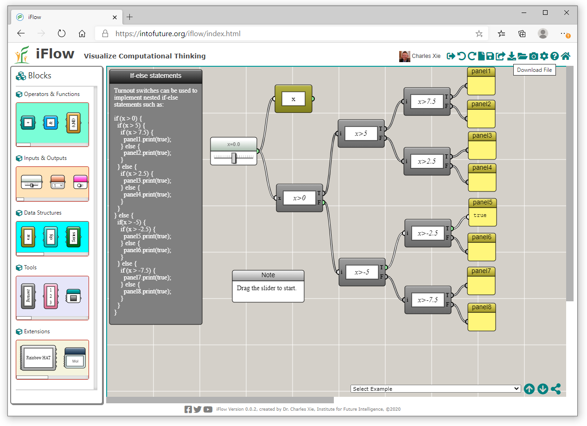
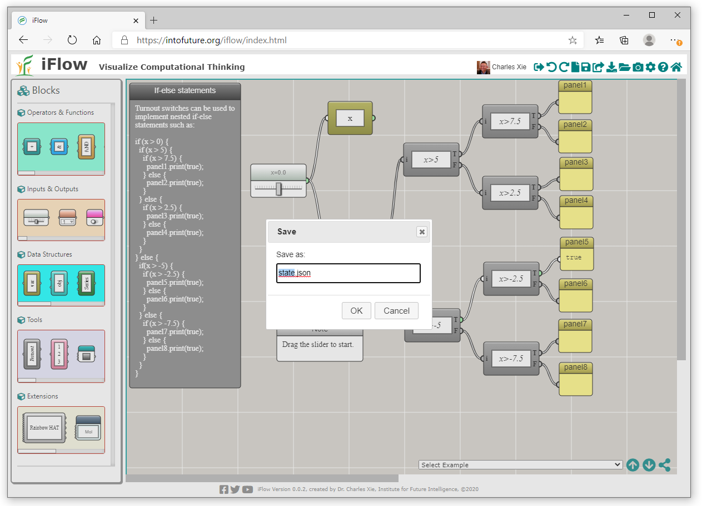
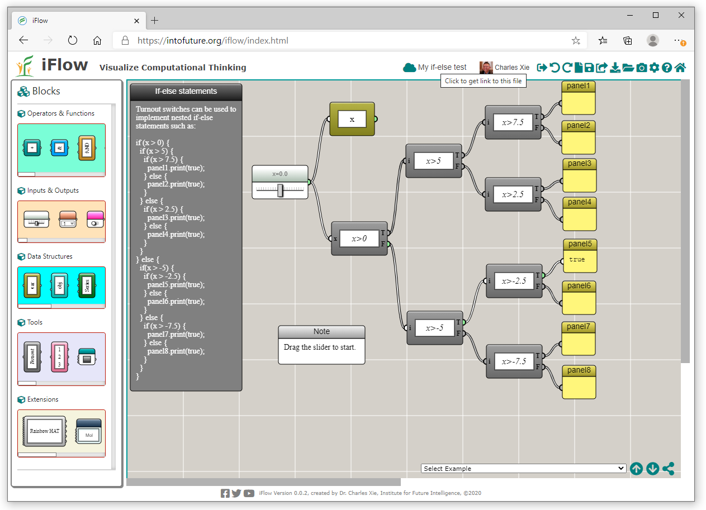
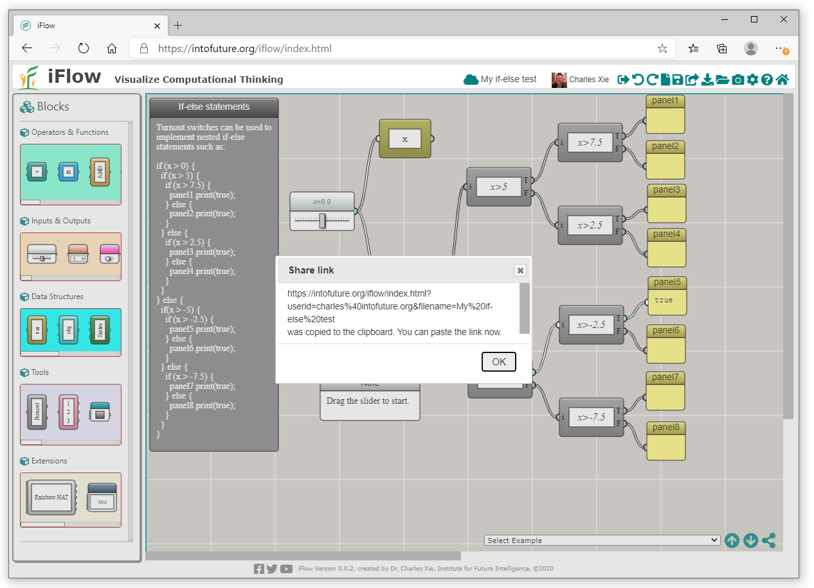
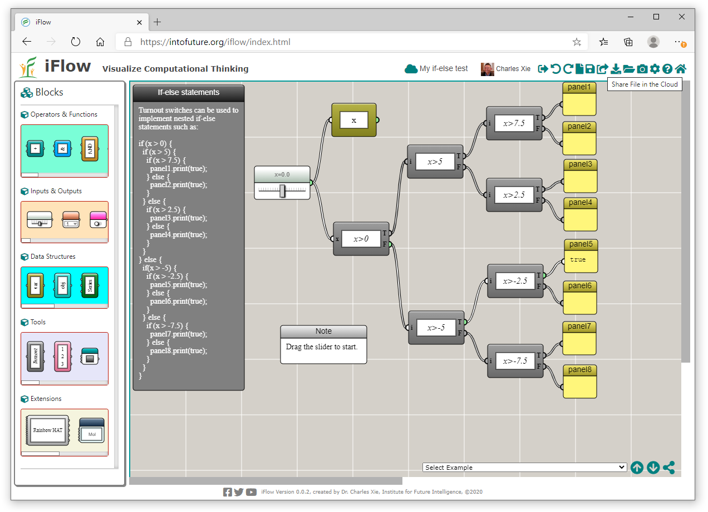
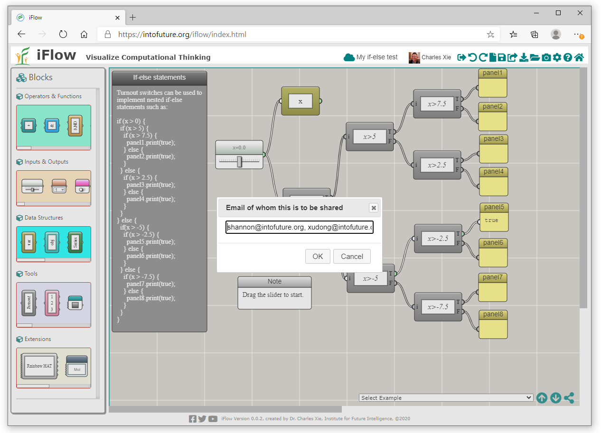

Three Ways to Share Your iFlow Files
Download and send, save to the cloud and share a link, or share directly with another iFlow user.
Once you create something in iFlow, you may want to share it with someone else. The following are three different ways of doing so.
1. Save the file locally and send it through other tools
You can save your work to a file on your hard drive. The Download button can be found on the top tool bar as shown below:

Once you click the button, you will be prompted to give it a name:

The file will be saved into the Downloads folder of your computer. Once you have saved the file, you can send it to anyone through email or any other ways and ask them to use the "Open Local File" button on the top tool bar of iFlow to open it.
2. Save the file to the cloud and share a link
You can save the file to the cloud first and then share a link to it. To do so, click the name of the cloud file on the tool bar shown as follows:

You should see the following dialog:

Just paste the link in your email or any other messaging forms to the people you want to share.
3. Save the file to the cloud and share it with an iFlow user
If you know a user with whom you want to share a cloud file has signed in with iFlow before, you can use the Share button on the tool bar as shown below:

Clicking this button opens up a window in which you can type the email address(es) of the recipient(s):

You can type multiple email addresses and separate them by a comma. Once shared, your file will appear in the recipients' clould accounts with iFlow where they can conveniently open it. Meanwhile, they will also be notified through email.
← Back to iFlow